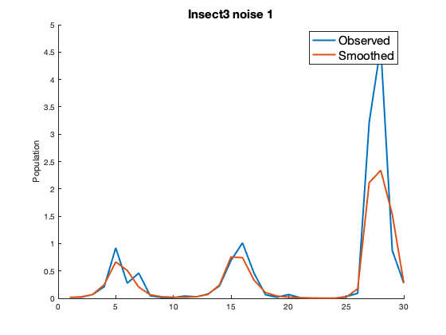
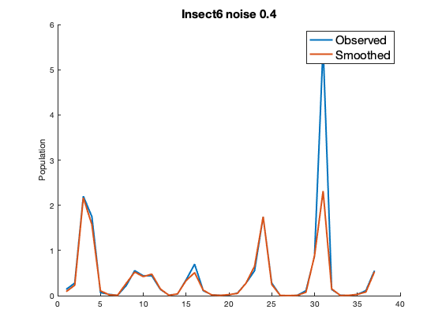
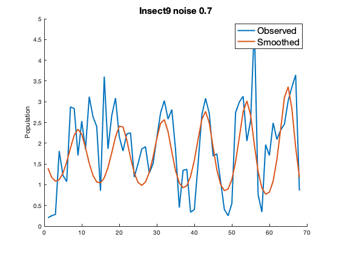

Empirical Data Example
Instructions for how to apply HMSmap to Ecological data. Inscect population abundance data taken from the Global Population Dynamics Database, (Pendergast et al., 2010)
Contents
Gather Data and Initialize Parameters
step: sets how many steps ahead to forecast seq_obs: grid of observation noise values to optimize over E_all,_Lyp_all_,_theta_all_,_noise_all_: store parameters chosen for each time series Y: stores observed data, XP: smoothed time series, X_pred: Forecast oe_1: observation noise in one step ahead forecast oe_3: observation noise in three step ahead forecast vp: process noise estimate v_I: total variance in the observed data
addpath '/Users/dylanesguerra/Desktop/HMS_map/docs' Insects_data = readmatrix('/Users/dylanesguerra/Desktop/HMS_map/Emprical_data/Insects.csv'); Insects_data = Insects_data(2:end,2:end); %removes index n = 16; step = 3; seq_obs = 0:0.1:1; E_all = zeros(1,n); Lyp_all = zeros(1,n); theta_all = zeros(1,n); noise_all = zeros(1,n); Y = cell(1,n); XP = cell(1,n); X_pred = cell(1,n); oe_1 = zeros(1,n); oe_3 = zeros(1,n); vp = zeros(1,n); v_I = zeros(1,n);
Apply HMSmap to Each Time Series
FNN uses the false nearest neighbors algorithm to estimate the Embedding Dimension of each series from the observed data, (Kennel et al., 1992) The noise level of each time series is unkown in empirical data and must be determind over a grid of possible vales in seq_obs For each noise level the optimal is determind based on minimizing the observation error of the furthest step ahead forecast with fminbnd theta stores the best choice of for each noise level alongside the error saved in test Lastly the noise level is selected to be the one with the lowest coresponding error in test
% The Lyapunov Exponent is estimated with the lyapunov_QR_lags function taking in the coeficients of HMSmap as well as the embedding dimension. for i = 1:n data = Insects_data(~isnan(Insects_data(:, i)), i); Y{i} = data; T = length(data); FNN = f_fnn(data,1,10,15,2); [~,E]= min(FNN); v_I(i) = var(data); test = rand(length(seq_obs),1); theta = zeros(1,length(seq_obs)); for j = 1:length(seq_obs) noise = (seq_obs(j)*std(data))^2; fun = @(z)HMSmap_lags(data,'gaussian',z,noise,E-1,1,0,step,[]).oe(step); z = fminbnd(fun,0,50); theta(j) = z; test(j) = HMSmap_lags(data,'gaussian',z,noise,E-1,1,0,step,[]).oe(step); end [M,I] = min(test); theta_all(i) = theta(I); noise_all(i) = seq_obs(I); out = HMSmap_lags(data,'gaussian',theta_all(i),noise_all(i),E-1,1,0,step,[]); XP{i} = out.states; X_pred{i} = out.pred; E_all(i) = E; oe_1(i) = sqrt(out.oe(1)/var(data)); oe_3(i) = sqrt(out.oe(3)/var(data)); vp(i) = sqrt(out.vp/var(data)); Lyp_all(i) = lyapunov_QR_lags(out.coef, T-(E-1), E-1); if mod(i, 5) == 0 figure hold on plot(data,"LineWidth",2) plot(out.states,"LineWidth",2) hold off legend("Observed","Smoothed","FontSize",20) ylabel('Population') title(['Insect' num2str(i) ')','noise' num2str(seq_obs(I)),"E",num2str(E-1)],"FontSize",20) end end  